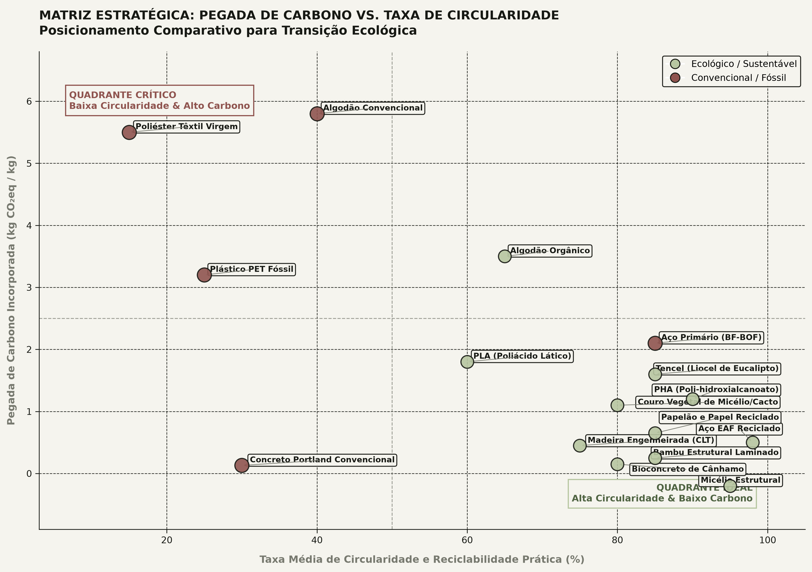

A engenharia computacional contemporânea enfrenta um estrangulamento conceitual: sistemas clássicos de CAD baseados em representação de fronteira (B-Rep) foram projetados para formas prismáticas industriais do século XX — planos, cilindros e ranhuras usinadas em metais isotrópicos. Quando confrontados com microestruturas porosas complexas, superfícies mínimas e materiais celulares anisotrópicos como a celulose densificada, os modelos de B-Rep colapsam sob arquivos gigantescos e falhas topológicas de malha.
A convergência entre geometria implícita e física
Para desbloquear a fabricação aditiva e a usinagem adaptativa de materiais biomiméticos de alta performance, a engenharia está migrando para kernels de geometria implícita volumétrica. Em vez de descrever um objeto por milhões de triângulos de casca externa, o sólido é definido como um campo escalar contínuo tridimensional através de uma função de distância assinada (Signed Distance Field - SDF):
$$f(x, y, z) = d$$
Onde $d < 0$ define o interior do material sólido, $d = 0$ determina a fronteira exata da superfície física e $d > 0$ representa o espaço vazio circundante. Esse paradigma elimina completamente problemas de "furos em malhas", arestas desconectadas ou erros numéricos de união booleana.
B-Rep tradicional versus Voxel/SDF
O teste de estresse conduzido nos protótipos de código em pesquisa_celulose_e_geometry_kernels/ demonstrou a disparidade de performance computacional entre os dois paradigmas:
| Critério de Engenharia | B-Rep Clássico (STEP / IGES) | Geometria Implícita (PicoGK / SDF) |
|---|---|---|
| Representação Matemática | Superfícies NURBS + Topologia de borda | Função de Distância Escalar / Voxels |
| Estruturas Celulares (>100k poros) | Inviável (estouro de RAM e travamento) | Tempo de cálculo linear e determinístico |
| Operações Booleanas (União / Corte) | Frágeis (falhas de tolerância milimétrica) | Infalíveis ($min(d_1, d_2)$ analítico) |
| Gradiente de Densidade Funcional | Requer remodelagem manual de cascas | Modulação contínua do campo de offset |
| Tamanho de Arquivo do Modelo | Centenas de Megabytes em malha (.stl) | Algoritmo procedural enxuto em código C#/Python |
O modelo constitutivo da parede celular
Para prever o comportamento mecânico da celulose durante o colapso físico de prensagem, o laboratório implementou um modelo micromecânico de elementos celulares baseado nas equações modificadas de Gibson-Ashby para espumas fechadas em regime de grandes deformações:
$$E = E_s \left( C_1 \phi^2 + C_2 \phi \right)$$
Onde $\phi = \rho / \rho_s$ é a fração de sólidos relativos, $E_s \approx 65\ \text{GPa}$ é o módulo intrínseco da parede celular sólida desprovida de vazios, e $C_1, C_2$ são constantes geométricas de arqueamento e compressão axial dos lúmens.

A simulação numérica micromecânica demonstra três fases distintas:
- Fase 1 (0% a 30% de deformação transversal): Flexão elástica das paredes celulares finas. A densidade sobe moderadamente de 0,34 para 0,49 g/cm³, com módulo atingindo 16,5 GPa.
- Fase 2 (30% a 65% de deformação): Colapso plástico progressivo dos canais tubulares. As faces opostas dos lúmens entram em contato inicial mecânico.
- Fase 3 (65% a 80% de deformação): Densificação compacta. Os vazios são virtualmente extintos ($\phi = 0,98$), e a resposta mecânica aproxima-se da resistência pura das fibrilas cristalinas alinhadas (520,5 MPa).
O desafio da anisotropia fibrilar
Os kernels de geometria implícita contemporâneos assumem materiais perfeitamente homogêneos e isotrópicos (como titânio sinterizado a laser ou polímeros de cura UV). A madeira, entretanto, possui anisotropia ortotrópica severa: a resistência na direção axial ($L$) é até vinte vezes superior à resistência transversal ($R$ e $T$).
A fronteira algorítmica explorada no modelo computacional do laboratório consiste em desacoplar o campo de geometria externa do campo vetorial de orientação de material. Um tensor de orientação $\vec{v}(x,y,z)$ é mapeado em cada voxel, permitindo que as nervuras bionicamente geradas pelo algoritmo sigam estritamente o alinhamento das linhas de tensão principal calculadas por análise de elementos finitos (FEA).
Superfícies mínimas periódicas: Gyroid e Schwarz P
Ao sintetizar peças estruturais que exigem rigidez torsional e leveza, o motor implícito gera preenchimentos volumétricos por superfícies mínimas triplamente periódicas (TPMS). A equação do Gyroid:
$$\sin(kx) \cos(ky) + \sin(ky) \cos(kz) + \sin(kz) \cos(kx) = t$$
Permite modular continuamente o parâmetro $t$ no espaço tridimensional. Onde as tensões mecânicas são críticas, $t$ aumenta localmente, engrossando as paredes de suporte sem gerar descontinuidades de solda ou concentração de tensão em quinas vivas.
Quando a física constitutiva da parede celular de celulose é codificada diretamente nas regras procedurais de um kernel implícito, a forma não é desenhada manualmente: ela é calculada para suportar a carga exata com o mínimo absoluto de matéria biológica.
Ferramentas de código aberto e bibliografia
Os protótipos de código e as simulações deste estudo estão disponíveis nos scripts internos do diretório pesquisa_celulose_e_geometry_kernels/scripts/:
- Gibson, L. J. & Ashby, M. F. Cellular Solids: Structure and Properties. Cambridge University Press (2nd ed., 1997).
- PicoGK: Compact Open-Source Computational Engineering Kernel by LEAP 71 (2024).
- Perlin, K. Improving Noise. ACM Transactions on Graphics (TOG) 21(3), 681–686 (2002).